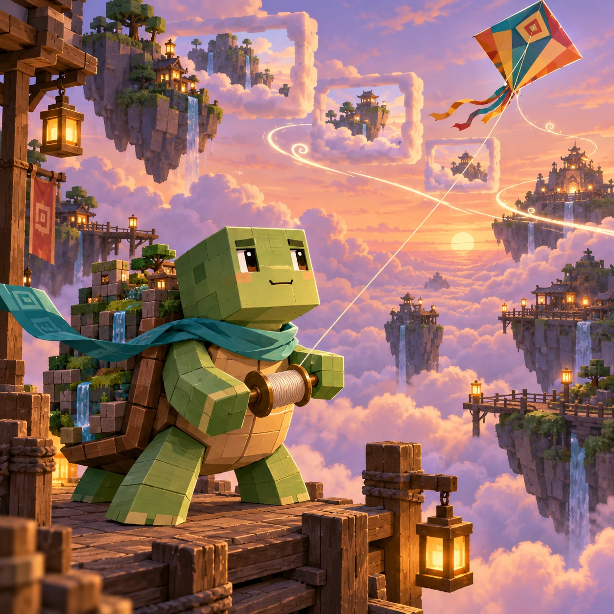
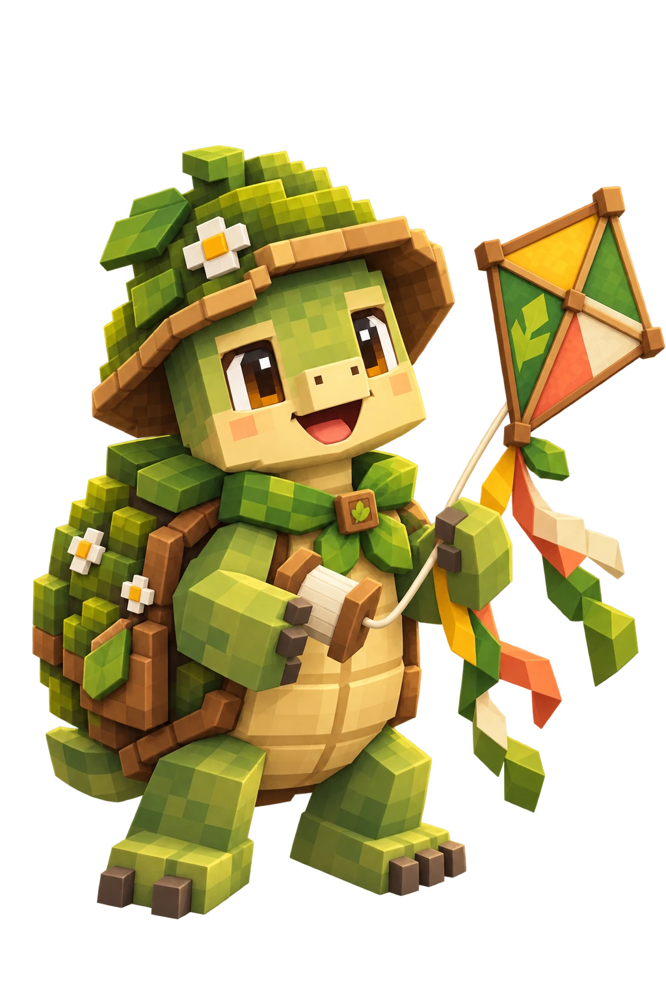

6+ · FAMILY · ORIGINAL PROTOTYPE
Kite Keeper
Choose the wind. Find the lantern dock.
30 sky routes · 3 gusts each
Best checks: —

How to play
Choose one wind card at a time. Reach the lantern dock in exactly three gusts.
Read the flight plan
Each of the thirty routes starts with a kite on a marked grid square and a lantern dock on another. The route card gives the three wind directions that reach the dock. Check the start, target, and directions before choosing. Each gust moves the kite one square: north goes up, east right, south down, and west left. The aim is to track both coordinates and land on the dock after the third move.
Choose one gust at a time
Open Sky routes, pick a numbered route, then choose from the four Wind cards in Battle. The kite moves after each choice, and the position line shows its new coordinates. Compare them with the dock before continuing. The progress pill names the route, while the gust counter shows how many of the three moves you have used. You choose every direction; the game does not correct a move for you.
Recover from a drift
A move off the board or a third gust that misses the dock locks the current attempt. Choose Reset route to return the kite to its starting square and clear that attempt's gust history. Previously completed routes stay marked when this browser can save them. There is no timer or lives counter. Use the last position to spot which coordinate changed the wrong way, then try again.
Progress through thirty routes
The campaign has thirty selectable stages: ten flights in each of three visual route families. Routes vary in their starting squares, docks, and three-wind sequences, so read the coordinates before choosing. Every route has its own start, dock, and three-gust plan. After a route, Result offers Next route, Sky routes, and Back to General lobby. Completing all thirty updates the Result heading.
Use the board and controls
The kite and lantern are the key markers; the coordinates remain visible as you move. Wind cards work with pointer, touch, and keyboard navigation. The Stage list uses tabs with arrow keys, Home, and End. Settings offers thirteen languages and a sound preference. Sound is optional feedback; the board, status, and Result also show what happened when audio is muted.
Strategy and saved progress
Before a move, say how it changes the coordinates, then check the marker. East increases the first coordinate; north decreases the second. Completed-route progress is saved in this browser when storage is available. When all thirty routes are complete, the game saves the number of Wind-card choices made since you opened this page, including choices from attempts you reset. Choices from earlier visits are not included. Clearing browser storage can erase these records, and private browsing may keep them only for the visit. Kite Keeper is a calm spatial-planning puzzle built around thirty fixed three-gust routes.
FAQ
- How many routes are there?
- There are thirty selectable routes, grouped into three visual families of ten.
- What happens after a wrong move?
- A move off the board or a third gust that misses the dock locks that attempt. Reset route returns the kite to the current route's start; it does not clear routes you already completed.
- Is progress saved?
- Completed routes are saved in this browser when storage is available. When all thirty routes are complete, the game saves the number of Wind-card choices made since you opened this page, including choices from attempts you reset. Choices from earlier visits are not included. Clearing storage can erase these records; private browsing may keep them only for the visit.
- Is there a timer or a lives limit?
- No. A mistaken route can be reset and tried again without a timer or lives counter.
STAGE MAP
Sky routes
Choose one wind card at a time. Reach the lantern dock in exactly three gusts.
BATTLE
Meadow Lift
Wind cards
Choose a wind card
RESULT